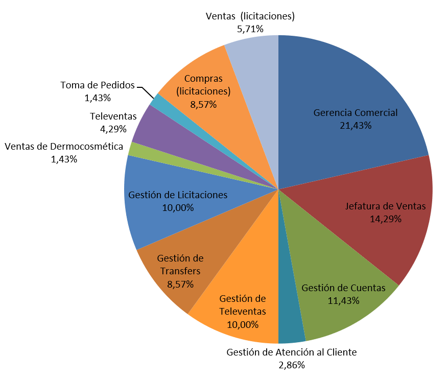
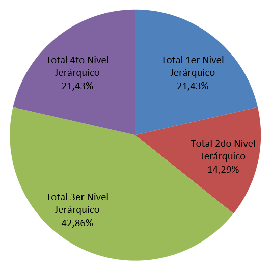

Distribución de las decisiones en el área comercial
Análisis del sistema
- Concentración de decisiones en gerente comercial.
- Jefe de ventas con pocas decisiones; tipo de poder experto.
- Puestos operativos con mucha capacidad debido a la amplia trayectoria en la empresa.
- Entorno complejo y estable.
- Buena comunicación interna.
Diagnóstico
Propuesta de solución
Definir límites correctamente y formalizar manual de decisiones.
- Gerencia Comercial decidirá con respecto a los clientes categoría A, delegando categorías B a D a Jefatura de Ventas o a unidades funcionales del 3er nivel jerárquico según corresponda.
- Distribución de RRHH con el límite definido entre Jefatura de Ventas y Gerencia Comercial. Se decidirá en base a sus subordinados directos.
Efectos
Reglas básicas de la toma de decisiones:
- Una decisión debe tomarse en el nivel más bajo en que se tenga conocimiento del problema.
- Una decisión debe tomarse en un nivel que contenga o sea superior a todas las funciones afectadas
Efectos de las propuestas
- Total de 70 decisiones, a comparación de 65 según lo relevado.
- Jefatura de Ventas tomará decisiones tácticas.
- Mejor distribución de la unidad funcional de licitaciones.
- Mayor dotación de decisiones al 4to nivel jerárquico.
Nueva distribución de decisiones

